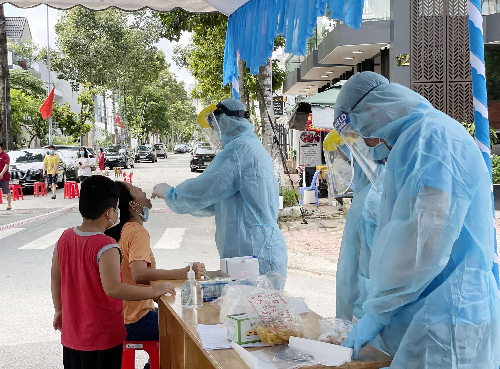
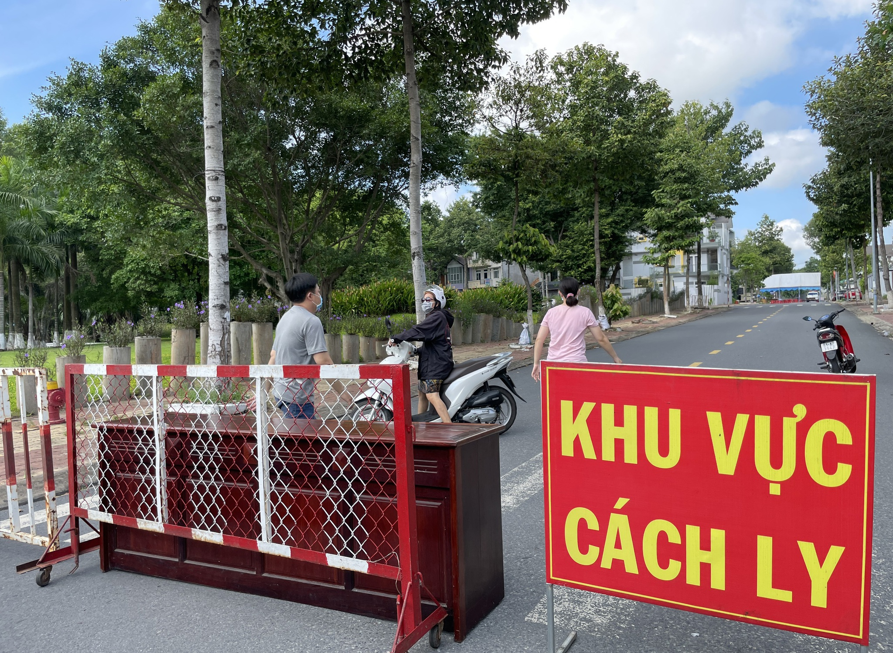
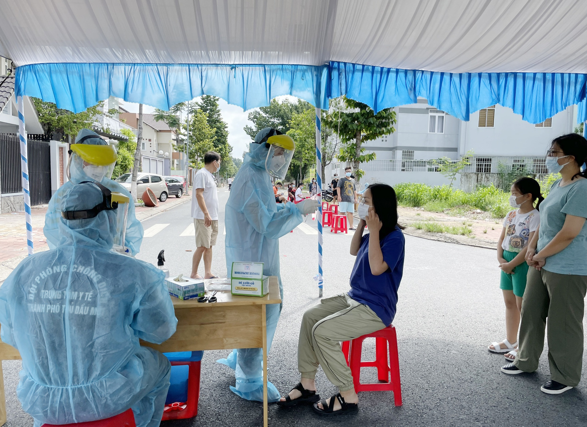

Ngày 31.5, Trung tâm Kiểm soát bệnh tật (CDC) Bình Dương cho biết đã phát hiện thêm ca dương tính với Covid-19, nâng tổng số thành 6 ca được phát hiện trên địa bàn tỉnh những ngày gần đây.
Lấy mẫu xét nghiệm sàng lọc Covid-19 cho cư dân KDC Hiệp Thành 3- ẢNH: ĐỖ sTRƯỜNG
Cụ thể, ca dương tính với Covid-19 được phát hiện tối 30.5 là công nhân làm việc tại Công ty TNHH CJ VINA chi nhánh Bình Dương, địa chỉ tại đường số 17, KDC Hiệp Thành 3 (P.Hiệp Thành, TP.Thủ Dầu Một, Bình Dương).
Từ rạng sáng 31.5, cơ quan chức năng TP.Thủ Dầu Một đã phong toả, cách ly toàn cư dân thuộc KDC Hiệp Thành 3 để khoanh vùng, truy vết F1, F2, lấy mẫu xét nghiệm sàng lọc Covid-19.
Khu vực cách ly ở KDC Hiệp Thành 3 - ẢNH: ĐỖ TRƯỜNG
Trước đó, từ ngày 29 - 30.5, cơ quan y tế Bình Dương ghi nhận thêm 3 ca dương tính với Covid-19 là mẹ, chị gái và em gái của 2 nữ sinh viên (đã phát hiện dương tính tại TP.HCM) học trường Cao đẳng Kinh tế - Đối ngoại TP.HCM và Học viện Cán bộ TP.HCM về thăm gia đình tại KP.Bình Quới B (P.Bình Chuẩn, TP.Thuận An, Bình Dương). Cơ quan chức năng đã phong toả nhiều khu vực của KP.Bình Quới.
Cơ quan y tế TP.Thủ Dầu Một lấy mẫu xét nghiệm truy vết F1, F2
Qua điều tra dịch tễ, CDC Bình Dương đã khoanh vùng được các địa điểm gồm:
Phong toả một khu vực ở KP.Bình Quới (TP.Thuận An) - ẢNH: ĐỖ TRƯỜNG
CDC Bình Dương thông báo những người đã đến các địa điểm trên và liên quan đến các ca dương tính với Covid-19 vừa được phát hiện khẩn trương khai báo y tế với cơ quan y tế địa phương nơi gần nhất để được hỗ trợ.
Tin Liên Quan